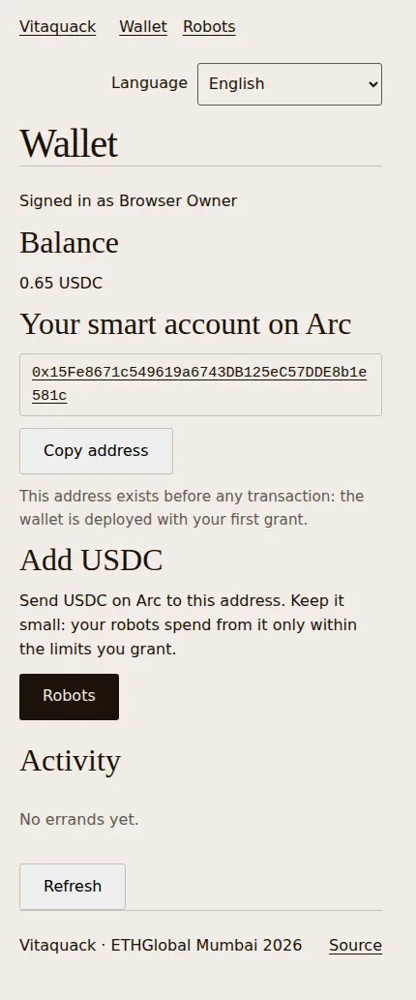
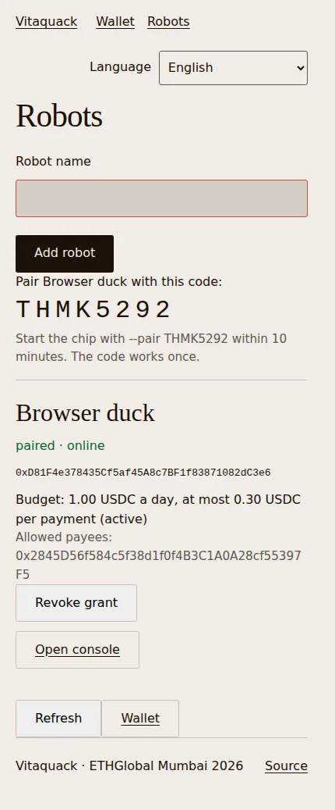
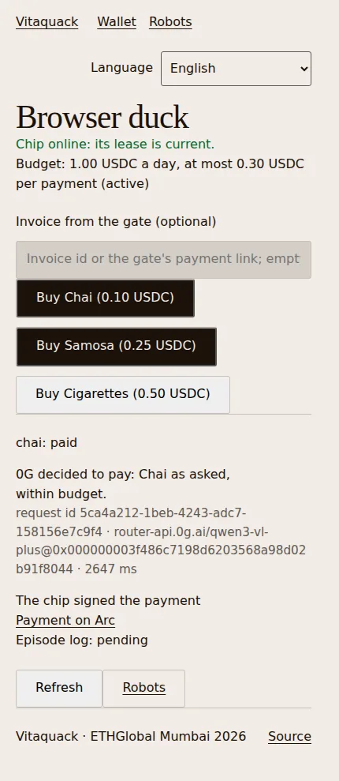
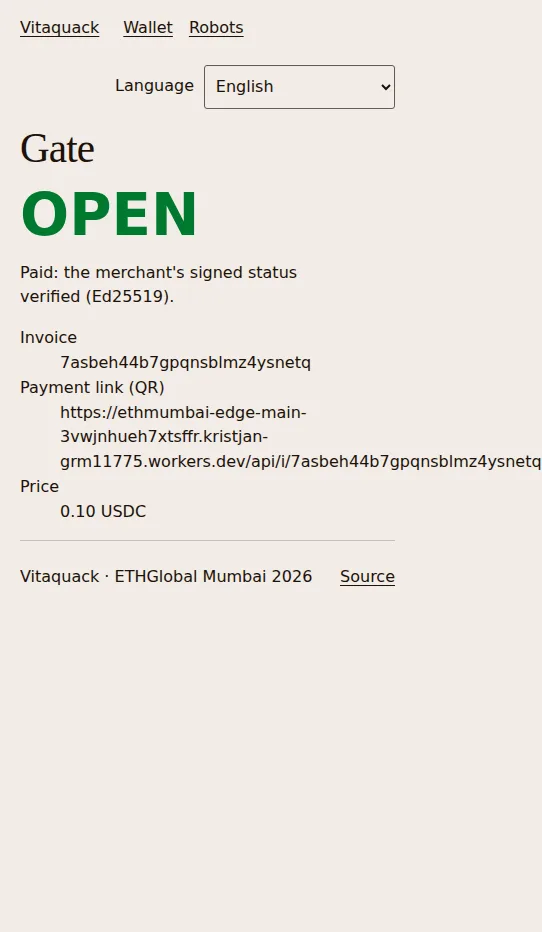
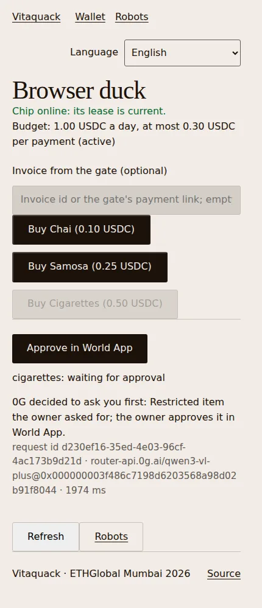
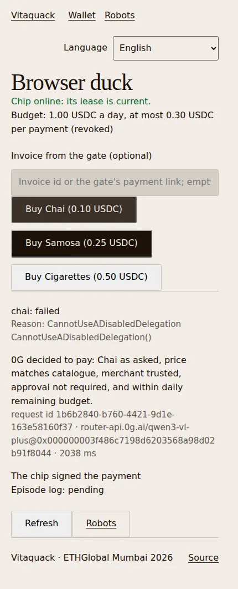

The idea
Soon, everyone will have a robot of their own.
It will fetch the shopping, pick up the parcel and run the errands you don't have time for.
A robot that does things has to pay for them.
Chai at the corner stall, a charge at the kerb, a parcel at the locker. Real errands cost real money, paid on the spot.
Today it has two bad ways to pay.
The key belongs on the robot.
The robot carries its own key on its own chip, and it never leaves. Your rules sit on a public chain, not on our servers. Your money stays in your wallet: the robot only gets permission to spend it.
Who holds what
- Your key
- A passkey on your phone. No seed phrase, no password.
- The robot's key
- On the robot's own chip. It signs every payment and never leaves the chip.
- Your money
- In your own wallet on Arc, in USDC. Nobody else can move it.
- The rules
- A contract on Arc: how much a day, how much at once, where, until when. Arc checks every payment.
- Its decisions
- Made by AI on 0G, each one logged, and every errand kept on 0G Storage.
- The big yeses
- You, on your phone, proving with World ID that a real person approved.
- Our servers
- Pass messages along. They can't spend a cent, and if they vanish your money is still yours. Next, the robot's agent moves onto the robot too.
on a device you holdon a public network
What we built this weekend
The first version works, with real money.
A passkey wallet, a robot with its own key, a budget it can't break and you in the loop for the big ones. Live on Arc mainnet with real USDC.
Six steps, all real
These are screens from the deployed app. Every link opens a real transaction.
-

A wallet from a passkey
Sign up with Face ID. Your smart account on Arc exists right away.
-

A robot with a budget
Pair the duck with a one-time code, then grant 1.00 a day and 0.30 a payment with one passkey signature.
A passkey-signed grant on Arc -

It buys chai
0G decides to buy, the robot's chip signs, Arc settles.
The payment on Arc
The errand kept on 0G -

The gate opens
The stall sees a signed "paid" in under a second and lets the robot through.
-

Bigger buys ask you
0.50 is over its cap, so it asks. You approve in World App, and only that one payment goes through.
Approved live with World ID, paid on Arc -

You switch it off
Revoke with your passkey. The next purchase is refused by Arc itself.
The revoke on Arc
In today's demo the robot's chip software runs on a laptop beside the duck; signing on the duck's own board (a Radxa Zero 3W) works in a bench test. The screens come from our recorded runs on the deployed app, and the links are transactions from those runs.
Now, live.
A chai within budget, a bigger buy that asks, and the off switch.
Next
A robot for everyone, with a budget, not your wallet.
- The robot's agent runs on the robot, not on our servers
- Several robots on one wallet, each with its own budget
- Robots paying robots for charging, parcels and rides